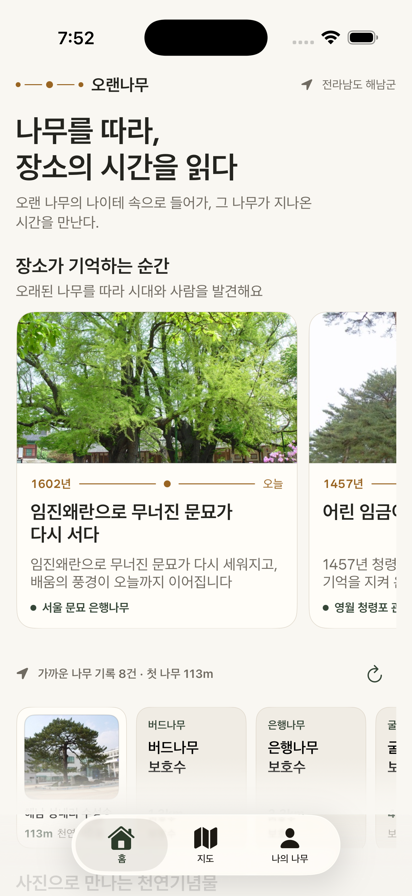
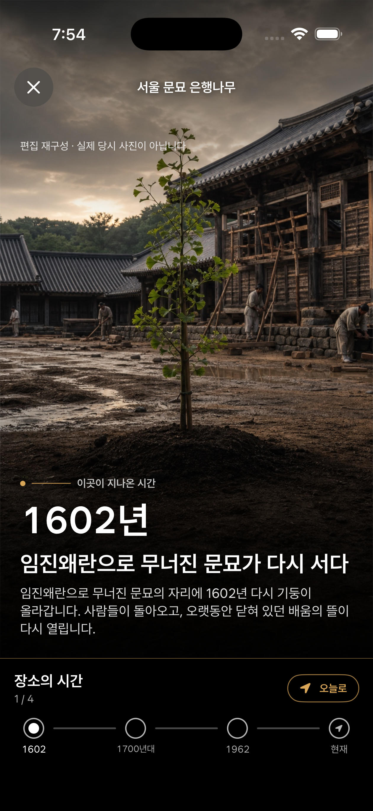

지도에서 발견하기
전국 보호수와 천연기념물의 위치와 기록을 살펴보고, 다시 보고 싶은 나무를 저장합니다.
전국의 오래된 나무를 지도에서 찾고, 나무가 바라본 장소의 시간을 이야기와 사진으로 만나는 앱입니다.

INSIDE 오랜나무
전국 보호수와 천연기념물의 위치와 기록을 살펴보고, 다시 보고 싶은 나무를 저장합니다.
네 그루의 나무를 따라 시대별 이야기를 만납니다. 과거 장면은 실제 역사 사진이 아닌 편집 재구성 이미지로 구분해 안내합니다.
사진과 촬영 시기를 등록하면 관리자 확인 뒤 나무의 공개 기록에 더해집니다. 내 사진과 온라인 계정은 앱에서 삭제할 수 있습니다.

WITNESS THE TIME
나무가 바라본 장소는 어떻게 달라졌을까요? 시대별 장면을 따라가며 오늘의 풍경과 지난 시간을 연결합니다.
과거 장면은 편집 재구성 이미지이며 실제 당시 사진이 아닙니다.